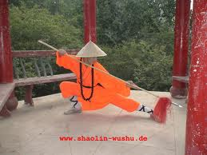

Kung Fu
Chinese martial arts, also referred to by the Mandarin Chinese term wushu (simplified Chinese: 武术; traditional Chinese: 武術; pinyin: wǔshù) and popularly as kung fu or gung fu (Chinese: 功夫; pinyin: gōngfu), are a number of fighting styles that have developed over the centuries in China. These fighting styles are often classified according to common traits, identified as "families" (家, jiā), "sects" (派, pài) or "schools" (門, mén) of martial arts. Examples of such traits include physical exercises involving animal mimicry, or training methods inspired by Chinese philosophies, religions and legends. Styles which focus on qi manipulation are labeled as internal (内家拳, nèijiāquán), while others concentrate on improving muscle and cardiovascular fitness and are labeled external (外家拳, wàijiāquán). Geographical association, as in northern (北拳, běiquán) and southern (南拳, nánquán), is another popular method of categorization.

Early History of Kung Fu
The genesis of Chinese martial arts has been attributed to the need for self-defense, hunting techniques and military training in ancient China. Hand-to-hand combat and weapons practice were important in training ancient Chinese soldiers.[6][7] While it is clear that various forms of martial arts have been practiced in China since antiquity, very little detail on specifics can be recovered for times predating the 16th century. By contrast, there is a variety of sources on the topic from the Qing period (1644 to 1912). Detailed knowledge about the state and development of Chinese martial arts becomes available from the Nanjing decade (1928–1937), as the Central Guoshu Institute established by the Kuomintang regime made an effort to compile an encyclopedic survey of martial arts schools. Since the 1950s, the People's Republic of China has organized Chinese martial arts as an exhibition and full-contact sport under the heading of Wushu.
Kung Fu in the present and Future
Most fighting styles that are being practiced as traditional Chinese martial arts today reached their popularity within the 20th century. Some of these include Bagua, Drunken Boxing, Eagle Claw, Five Animals, Hsing I, Hung Gar, Monkey, Bak Mei Pai, Praying Mantis, Fujian White Crane, Jow Ga, Wing Chun and T'ai chi ch'uan. The increase in the popularity of those styles is a result of the dramatic changes occurring within the Chinese society. Chinese martial arts experienced rapid international dissemination with the end of the Chinese Civil War and the founding of the People's Republic of China on October 1, 1949. Many well known martial artists chose to escape from the PRC's rule and migrate to Taiwan, Hong Kong,[29] and other parts of the world. Those masters started to teach within the overseas Chinese communities but eventually they expanded their teachings to include people from other ethnic groups.
Visit this link:Wikpedia Reference for Kung Fufor more reference material.